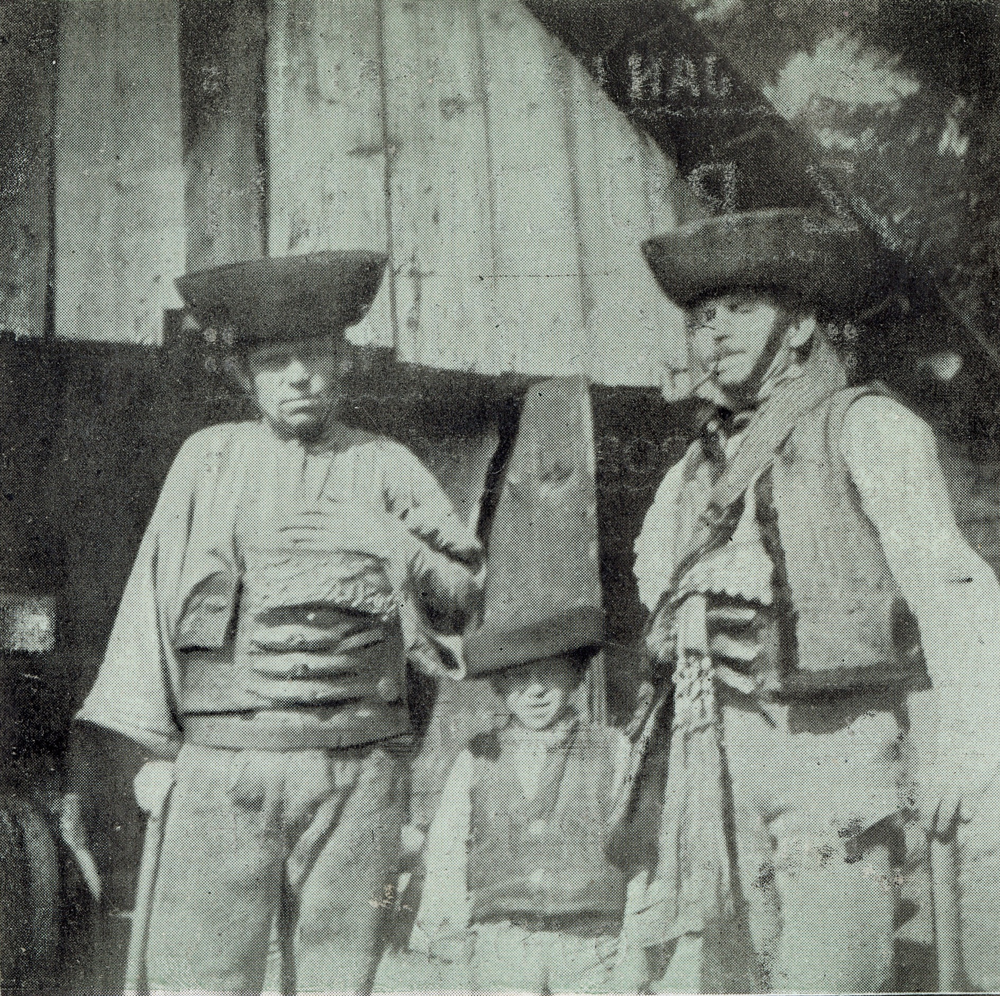
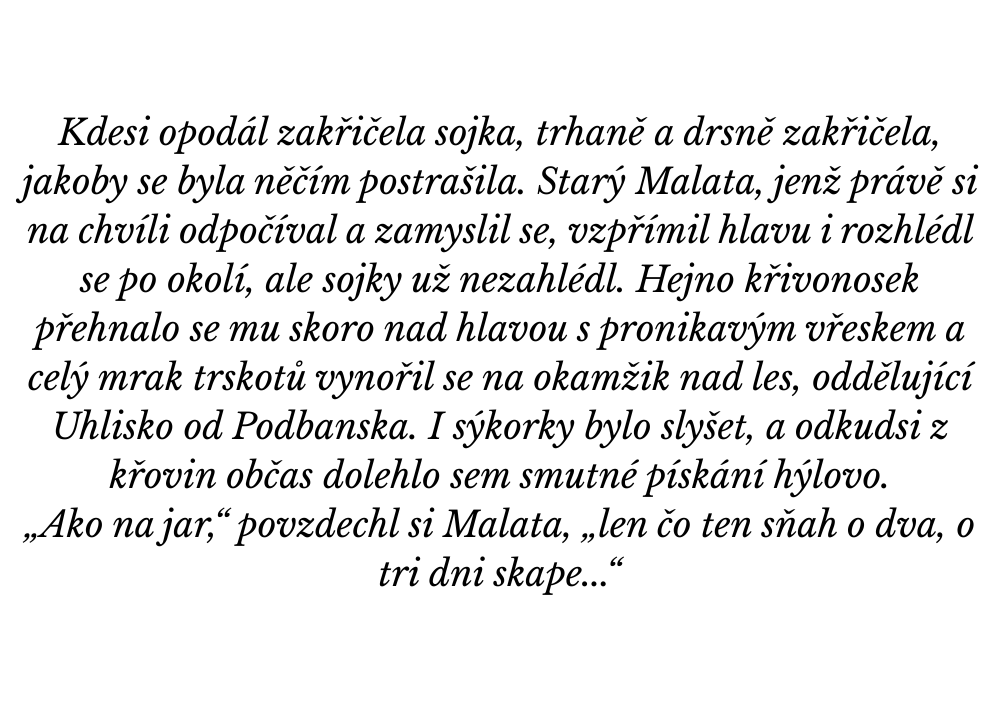
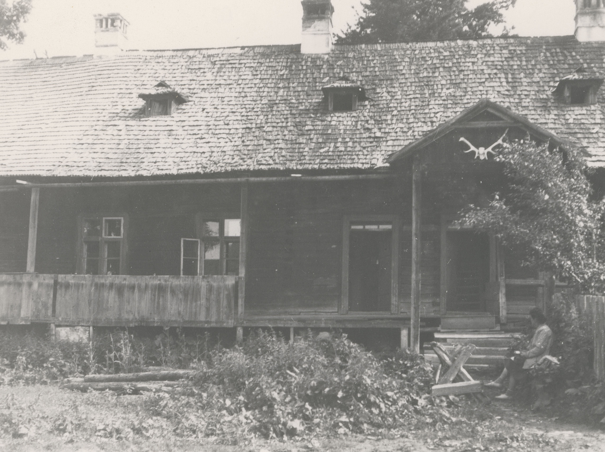
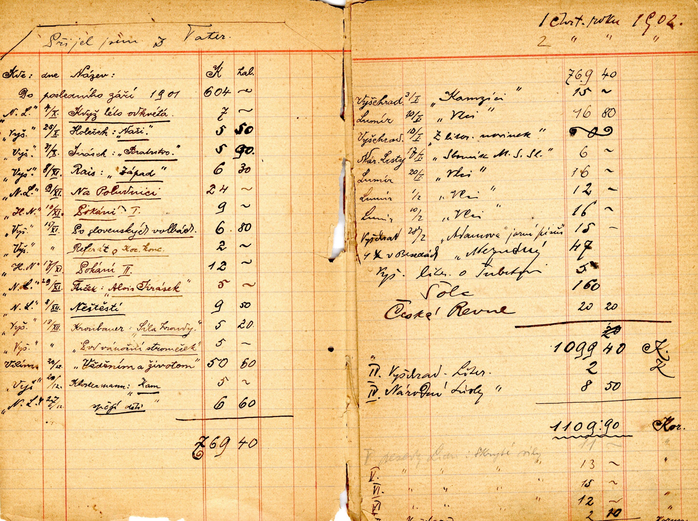
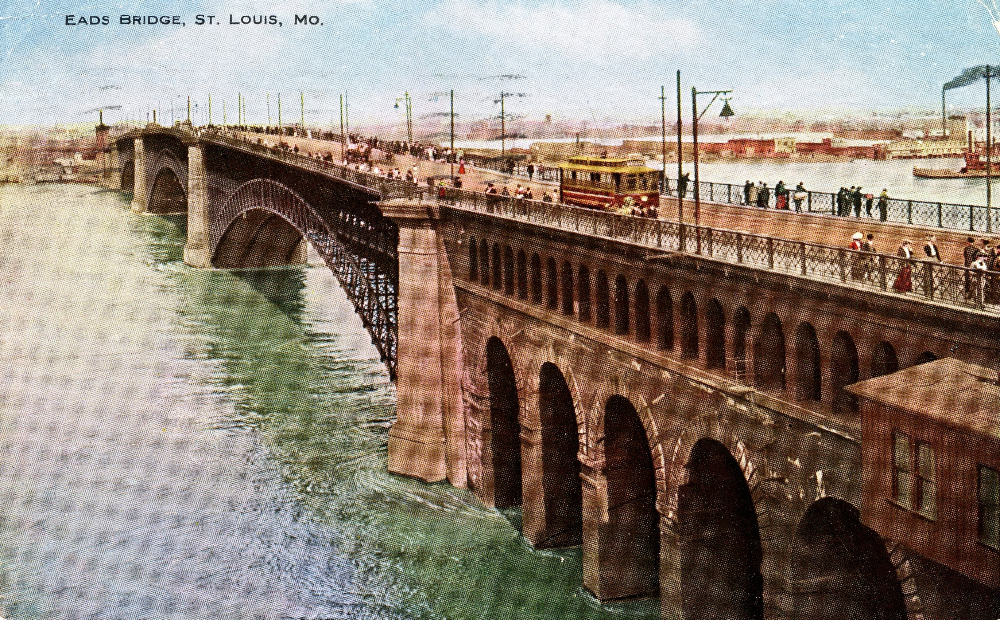
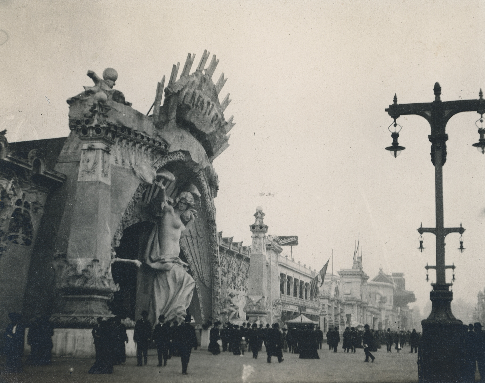
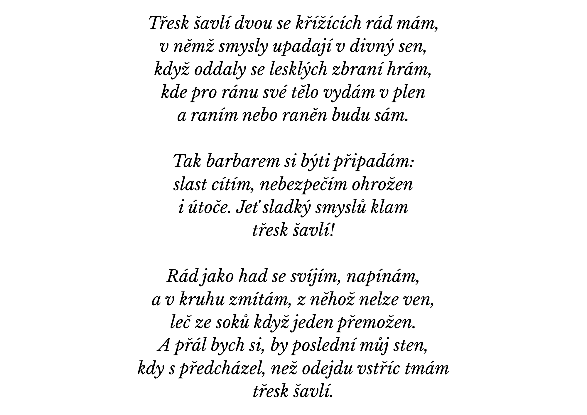
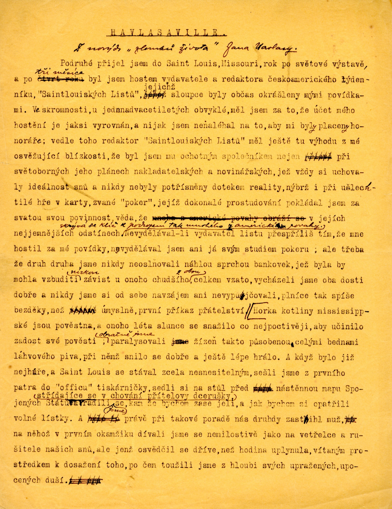

Narodil jsem se v roce 1883 v severočeských Teplicích. V roce 1904 mi je 21 let. Jsem
studentem filozofické fakulty, mám za sebou cesty po Čechách, Slovensku a Evropě. Publikuji
povídky z cest. Národní listy mi proto nabízí pozici neplaceného reportéra ze Světové výstavy
v Saint Luis ve Spojených státech Amerických.

První tatranské povídky (titulka), léto 1901

Úryvek z povídky Moře, Moře - První tatranské povídky, 1903-1904

Kobzáňova horáreň na Podbansku, 1901-1904

Literární příjmy Jana Havlasy, 1901-1902

Pohlednice ze Saint Louis, 1904

Světová výstava v Saint Louis, 1904

Báseň Třesk šavlí, 1904

Článek Jana Havlasy, 1905
Cestování po Evropě a Světová výstava v Saint Luis
Videoukázka
Po skončení výstavy zůstávám v USA a cestuji po Nebrasce, Kalifornii, Texasu a Arizoně. Zde
dokumentuji život krajanů.
U poštovní schránky v prériiKrajani v Nebrasce, konec 19. stoletíNa pláži Santa Monica, 1906Na cestě po USA, 1905-1906Pohlednice Univerzita Nebraska, 1909
Kvetoucí nopály, Zlomky života 1904-1928, Jan Havlasa, vydání 1929
Prosazuji myšlenky samostatného českého státu a díky tomu se seznamuji s rodinou Adolfa Hermana
z Los Angeles. A právě tato rodina se mi stává osudnou. Zamiloval jsem se totiž do dcery Adolfa
Hermana, do Elsie Hermanové. V roce 1910 s Elsie uzavírám sňatek.
Pohlednice z Los Angeles, 1910Aviatický den, Los Angeles, 1910S rodinou Adolfa Hermana, 1907Výlet do Elysian parku, 1910Výlet s rodinou Hermanových do Arizony, 1910V kraji věčného jara, 1909Jan a Elsie před domem v Los Angeles, 1909Novomanželé Havlasovi, 1910Ateliérový portrét, 1910
S rodinou Adolfa Hermana a manželkou Elsie
Na svatební cestu vyrážíme v tem samý rok na šest měsíců do Tichomoří.
Tahitská rodina francouzského úředníka, 1910Tahiti, 1910Tahiti, Jan Havlasa s fotoaparátem Kodak, 1910Ostrov Morea, Tahiti, 1910Ostrov Tahaa, 1910Cesta přes Tahiti k jezeru Vaihiria, 1910Pohlednice z Tahiti, malba Antonín Bruner, 1917Propast rozkoše, Jan Havlasa, 1929
Svatební cesta v Tichomoří
Úryvek z přednáškyÚryvek z přednáškyÚryvek z přednáškyÚryvek z přednáškyÚryvek z přednášky
Přednáška Příroda a lidé na Tahiti
V roce 1912 vyplouváme na cestu kolem světa. Během roku jsme procestovali Japonsko, Čínu,
Malajsii, Vietnam, Indii a pořádný kus Evropy. Z námětů posbíraných zejména v Japonsku
vyšly později knihy Roztříštěná duha a Přízraky a zázraky. Zpět do Prahy se dostáváme v roce 1913.
Na lodi Persia cestou do Číny a Japonska, 1912Na okraji kráteru Fudži, 1912U psacího stolu v Jokohamě, 1912Havlasovi v okně japonského venkovského hotelu, 1912Hora Nokogiri, Japonsko, 1912Článek v časopise Světozor, Jan Havlasa, 1927Indie, 1913Šanghaj, Čína, 1913Roztříštěná duha, Jan Havlasa, 1932Přízraky a zázraky, Jan Havlasa, 1934
Cestování po jihovýchodní Asii
PohledniceV Čechách, 1914Pozdrav českých spisovatelů z výletu, 1913Světlá nad Sázavou, 1914Na cestě kolem světa (1. část), Jan Havlasa, 1914Na cestě kolem světa (2. část), Jan Havlasa, 1914Sierrou Nevadou, Jan Havlasa, 1905
V Čechách
Povídka Osm na krávě - část 1Povídka Osm na krávě - část 2Povídka Osm na krávě - část 3Povídka Osm na krávě - část 4Povídka Osm na krávě - část 5
Povídka Osm na krávě, Jan Havlasa, 1914
V Čechách poté absolvuji roční přednáškové turné, naše zážitky z cest přetavuji v literární
zpracování. Zahájil jsem také studium přírodovědy na Karlově univerzitě. Politicky také dále
bojuji za vnik samostatného českého státu. Za protirakouský spis jsem roku 1916 odsouzen na
roční pobyt v žaláři.
Odstavec v Národních listech, 1913Pozvánka na přednášku, Dvůr Králové, 1913Úryvek z článku o přednáškách s promítáním, 1925Pozvánka na přednášku o Japonsku, 1917Úryvek z přednášky První dojmy v říši vycházejícího slunce, 1913Pozdrav z přednášky v Bystřici pod Hostýnem, 1913Pozdrav z přednášky v Uherském Hradišti, 1914
Přednáškové turné po Čechách a Moravě
Malajské léto (titulka), Jan Havlasa, 1926Malajské léto (úryvek 1), Jan Havlasa, 1926Malajské léto (úryvek 2), Jan Havlasa, 1926Vztah osadní politiky k světové válce (titulka), Jan Havlasa, 1914Vztah osadní politiky k světové válce (úvod), Jan Havlasa, 1914Pozvánka do Národního divadla, 1918
Tvorba
Po vzniku samostatného Československa v roce 1918 jsem byl jmenován členem československé
delegace mírových jednání v Paříži. V roce 1920 pak se ženou odjíždíme na čtyři roky do
Brazílie. Zde jsem jmenován mimořádným vyslancem. Nevzdávám se ale ani tvorby románů. Stávám
se také velkým obdivovatelem brazilské přírody.
Služební přísahaPřed palácem Catete, Rio de Janeiro, 1920Budova československé legace, Brazílie, 1920Manželé Havlasovi na terase legace, 1920Havlasovi na výletě ve Fazenda Atalaya, 1921Diplomatický sbor, Rio de Janeiro, 1920Nad pláží Copacabana, 20. léta 20. stoletíRio de Janeiro, 1922Ferradora, Brazílie, 1922Na výletě v okolí Rio de Janeira, 1921
Mimořádným vyslancem v Brazílii
Článek Československý vyslanec se loučí (1. část), 1924Článek Československý vyslanec se loučí (2. část), 1924Dopis od Emy Destinové (1. část), 1929Dopis od Emy Destinové (2. část), 1929Dopis od Emy Destinové (3. část), 1929Dopis od Dr. Františka Smotlachy, 1929
Korespondence z konce 20. let
Opiová komise, zřízená Společností národů v Ženevě, mě v roce 1929 oslovila, abych se stal
jedním z jejích komisařů. Na devět měsíců jsem tak odjel do východní Asie zkoumat problematiku
opia a jeho cesty do Evropy. Poprvé cestuji bez své ženy, denně ji ale píši.
Členové opiové komise, Mandžusko, 1929Opiová komise vyslýchá horníky, Indonésie, 1929Lékaři u stolů prohlížející kuřáky opia, 1929Kuřáci opia čekající na výslech, 1929Dřeváky na pašování opia, 1929Manila, Filipíny, 1930Za opiem kolem světa, Jan Havlasa, 1932Šek pro Jana Havlasu, 1929
Členem Opiové komise
Pohlednice z Batávie (dnešní Jakarta)Pohlednice z BarmyPohlednice ze Singapuru, 1. částPohlednice ze Singapuru, 2. část
Korespondence s manželkou
Do začátku druhé světové války se s Elsii několikrát stěhujeme. Postupně bydlíme v Paříži,
Monaku a v Los Angeles.
V bytě v Paříži, 30. léta 20. stoletíMonako, 30. léta 20. stoletíReklama na díla Jana Havlasy
Před začátkem druhé světové války
Za války podporuji odbojové hnutí, exilovou vládu, pořádám přednášky a publikuji v krajanských
novinách. V roce 1943 jsem jmenován velvyslancem Československé republiky v Chile. I tam pokračuji
v práci pro odboj, sháním peníze pro Československý červený kříž i exilovou vládu v Londýně. Díky
dobré pověsti Československa mezi zahraničními diplomaty i vedením republiky Chile se první pokus
o mé odvolání ze strany prezidenta Beneše nezdařil. Definitivně jsem byl odvolán až v roce 1947.
S prezidentem Chile, 1943Santiago de Chile, 1943Hranice Argentiny a Chile, 1943-1947Jezero a sopka Villarica, Chile, 1943-1947Projev k 60. narozeninám Edvarda Beneše, 1944Park Lidice, Santiago de Chile, 1944Park Lidice, Santiago de Chile, 1944Diplomatický sbor, Santiago de Chile, 1943-1947Manželé Havlasovi v přístavu, 40. léta 20. století
Velvyslancem v Chile
Diplomatický pas Jana Havlasy, 1944Jmenování do funkce, 1943Korespondence rodině, 40. léta 20. stoletíKorespondence s bratrem Vladimírem, členem exilové vlády, 1944Telegram, 1945Dopis předsedům vlády a poslanecké sněmovny - 1. část, 1947Dopis předsedům vlády a poslanecké sněmovny - 2. část, 1947Koncept článku, 1944
Doklady a korespondence během 2. sv. války
Po válce jsme se se ženou usadili ve Spojených státech. Oba jsem cítili zklamání z poválečného
směřování československé politiky. V Americe mi odmítali vydat občanství, mohl jsem zde ale
zůstat díky americkému občanství mé ženy Elsie. Pokračuji v literární tvorbě a se ženou cestuji
po národních parcích Kalifornie.
Poušť Colorado, 1954Sierra Nevada, 1955Pohoří San Gabriel Mountains, 1956Sierra Nevada, 1955Dům manželů Havlasových v Los Angeles, 1948Ve svém domě, 1953Před domem Havlasových v Los Angeles, 1955Maketa cestovního deníku, 50. léta 20. století
Cestování po národních parcích Kalifornie
Věčně mladý Jan Havlasa sedmdesátníkem, 1. částVěčně mladý Jan Havlasa sedmdesátníkem, 2. částVěčně mladý Jan Havlasa sedmdesátníkem, 3. částVěčně mladý Jan Havlasa sedmdesátníkem, 4. částZapomněli jsme?
Články Karla Domina a A. C. Nora
Po smrti své manželky v roce 1957 se uzavírám před světem ve svém domě. Výjimečně se setkávám
a koresponduji s několika přáteli. Sepisuji také své vzpomínky.
Jan Havlasa, 1958Jan Havlasa, 1958Jan Havlasa, 1958Obálka z korespondence, 1959Článek o smrti Jana Havlasy, LA Times, 1964Nekrolog, 1964